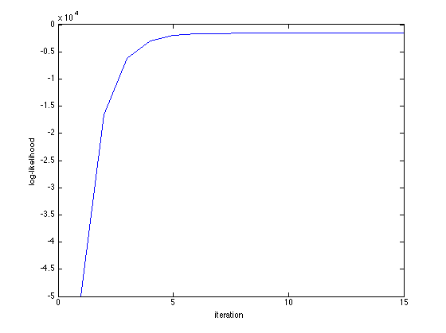
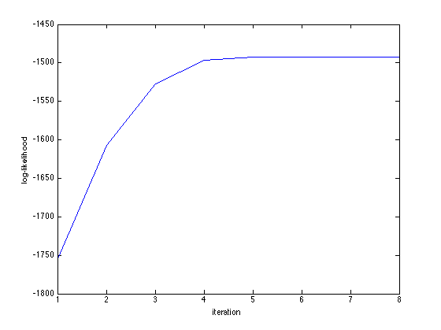
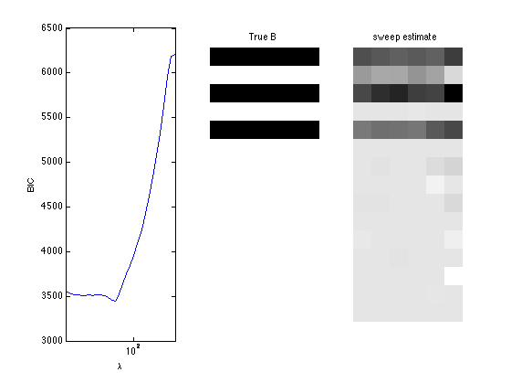
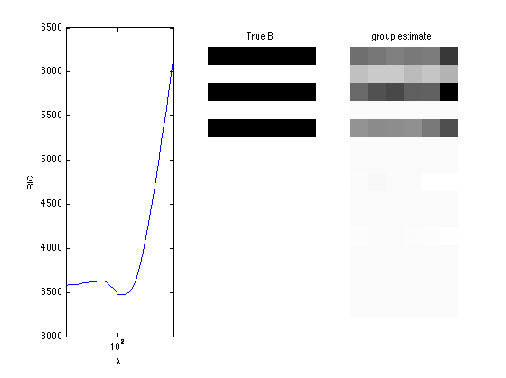
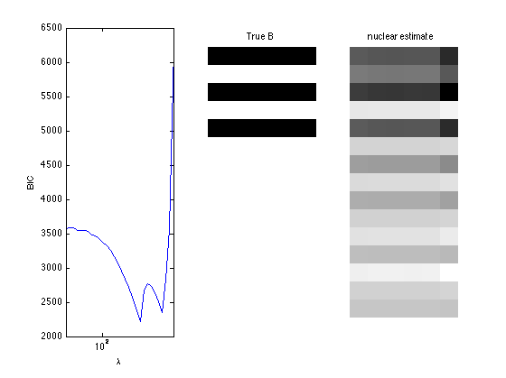
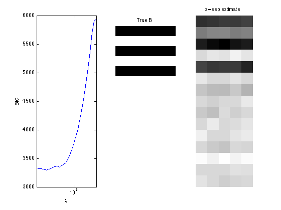
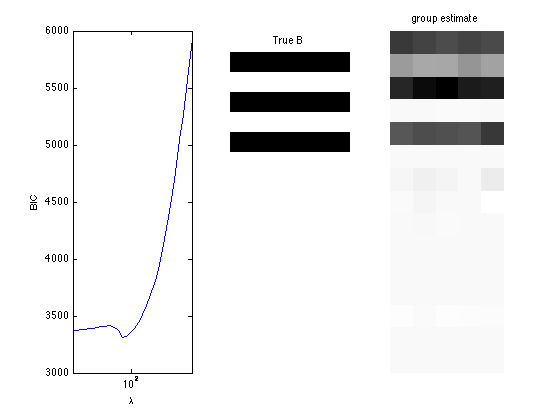
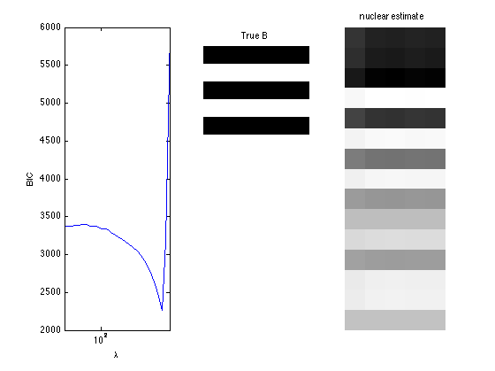

Negative multinomial regression and sparse regression
A demo of negative multinomial regression and sparse regression
Contents
- Generate negative multinomial random vectors from covariates
- Fit negative multinomial regression - link over-disperson parameter
- Fit negative multinomial regression - not linking over-disperson parameter
- Fit negative multinomial sparse regression - lasso/group/nuclear penalty
- Sparse regression (not linking over-disp.) - lasso/group/nuclear penalty
Generate negative multinomial random vectors from covariates
clear; % reset random seed s = RandStream('mt19937ar','Seed',1); RandStream.setGlobalStream(s); % sample size n = 200; % # covariates p = 15; % # bins d = 5; % design matrix X = randn(n,p); % true regression coefficients B = zeros(p,d+1); nzidx = [1 3 5]; B(nzidx,:) = ones(length(nzidx),d+1); eta = X*B; alpha = exp(eta); prob(:,d+1) = 1./(sum(alpha(:,1:d),2)+1); prob(:,1:d) = bsxfun(@times, alpha(:,1:d), prob(:,d+1)); b= binornd(10,0.2, n, 1); Y = negmnrnd(prob,b); zerorows = sum(Y,2); Y=Y(zerorows~=0, :); X=X(zerorows~=0, :);
Fit negative multinomial regression - link over-disperson parameter
tic; [B_hat, stats] = negmnreg(X,Y); toc; display(B_hat); display(stats); % Wald test of predictor significance display('Wald test p-values:'); display(stats.wald_pvalue); figure; plot(stats.logL_iter); xlabel('iteration'); ylabel('log-likelihood');
Elapsed time is 0.280617 seconds.
B_hat =
1.0559 1.0459 1.0098 1.0084 0.9932 -0.1119
0.0278 -0.0052 0.0070 0.0158 0.0092 0.1827
0.8343 0.8947 0.9116 0.8642 0.8333 0.2859
0.0411 -0.0185 0.0076 -0.0617 -0.0201 0.0264
0.9650 1.0042 1.0083 1.0122 1.0710 -0.1664
-0.1669 -0.1084 -0.0812 -0.1458 -0.0916 0.0577
-0.1095 -0.0959 -0.0644 -0.1221 -0.0612 0.3709
0.1659 0.1893 0.1286 0.1494 0.0899 -0.2356
-0.0414 0.0081 -0.1278 -0.0591 -0.0835 0.2748
-0.0397 -0.1438 -0.0578 -0.0818 -0.1170 -0.0070
0.2200 0.3404 0.2959 0.2698 0.2547 -0.5784
0.1163 0.1595 0.1778 0.0901 0.1181 -0.1753
-0.1064 -0.0661 -0.1113 -0.0682 -0.0980 0.0240
0.0613 0.0525 0.0720 0.0194 0.0251 -0.0206
-0.0697 -0.0377 0.0490 0.0055 -0.0188 0.1182
stats =
BIC: 3.5447e+03
dof: 90
iterations: 15
logL: -1.5451e+03
logL_iter: [1x15 double]
se: [15x6 double]
wald_stat: [1x15 double]
wald_pvalue: [1x15 double]
H: [90x90 double]
gradient: [90x1 double]
observed_information: [90x90 double]
Wald test p-values:
ans =
Columns 1 through 7
0 0.6526 0 0.6493 0 0.4724 0.0606
Columns 8 through 14
0.2285 0.0125 0.4257 0.0038 0.4790 0.8500 0.9286
Column 15
0.3161
 Fit negative multinomial regression - not linking over-disperson parameter
tic; [B_hat, b_hat, stats] = negmnreg2(X,Y); toc; disp(B_hat); disp(stats.se_B); disp(b_hat); disp(stats.se_b); display(stats); % Wald test of predictor significance display('Wald test p-values:'); display(stats.wald_pvalue); figure; plot(stats.logL_iter); xlabel('iteration'); ylabel('log-likelihood');
Elapsed time is 0.160916 seconds.
0.8703 0.8610 0.8284 0.8264 0.8117
0.1526 0.1215 0.1320 0.1414 0.1345
0.9052 0.9645 0.9824 0.9348 0.9053
0.0244 -0.0311 -0.0085 -0.0746 -0.0338
0.7500 0.7874 0.7897 0.7939 0.8518
-0.1307 -0.0742 -0.0470 -0.1106 -0.0575
0.0262 0.0408 0.0669 0.0126 0.0717
0.0421 0.0648 0.0063 0.0266 -0.0318
0.0491 0.0947 -0.0345 0.0310 0.0079
-0.0425 -0.1418 -0.0618 -0.0832 -0.1186
-0.0724 0.0411 0.0022 -0.0252 -0.0394
0.0828 0.1263 0.1437 0.0583 0.0849
-0.1464 -0.1080 -0.1518 -0.1103 -0.1390
0.0242 0.0186 0.0351 -0.0156 -0.0100
-0.0008 0.0313 0.1110 0.0707 0.0458
0.0760 0.0756 0.0756 0.0758 0.0758
0.0757 0.0754 0.0755 0.0758 0.0757
0.0672 0.0667 0.0666 0.0671 0.0671
0.0768 0.0766 0.0765 0.0767 0.0766
0.0765 0.0764 0.0763 0.0766 0.0763
0.0660 0.0655 0.0660 0.0662 0.0660
0.0699 0.0694 0.0694 0.0698 0.0697
0.0617 0.0612 0.0614 0.0618 0.0614
0.0712 0.0708 0.0709 0.0712 0.0709
0.0745 0.0739 0.0738 0.0744 0.0742
0.0752 0.0753 0.0750 0.0754 0.0755
0.0679 0.0674 0.0673 0.0673 0.0674
0.0722 0.0718 0.0720 0.0722 0.0722
0.0671 0.0666 0.0670 0.0670 0.0670
0.0692 0.0690 0.0687 0.0691 0.0688
2.2915
0.1355
stats =
BIC: 3.3630e+03
iterations: 8
logL: -1.4921e+03
logL_iter: [1x8 double]
se: [15x6 double]
wald_stat: [1x15 double]
wald_pvalue: [1x15 double]
H: [76x76 double]
gradient: [76x1 double]
observed_information: [76x76 double]
se_B: [15x5 double]
se_b: 0.1355
Wald test p-values:
ans =
Columns 1 through 7
0 0.4959 0 0.5382 0 0.3026 0.7689
Columns 8 through 14
0.2618 0.1964 0.2896 0.4888 0.1913 0.3636 0.8945
Column 15
0.3568
 Fit negative multinomial sparse regression - lasso/group/nuclear penalty
Regression on the over dispersion parameter
penalty = {'sweep','group','nuclear'};
ngridpt = 30;
dist = 'negmn';
for i = 1:length(penalty)
pen = penalty{i};
[~, stats] = mglm_sparsereg(X,Y,inf,'penalty',pen,'dist',dist);
maxlambda = stats.maxlambda;
lambdas = exp(linspace(log(maxlambda),log(maxlambda/100),ngridpt));
BICs = zeros(1,ngridpt);
logl =zeros(1, ngridpt);
dofs = zeros(1, ngridpt);
tic;
for j=1:ngridpt
if j==1
B0 = zeros(p,d+1);
else
B0 = B_hat;
end
[B_hat, stats] = mglm_sparsereg(X,Y,lambdas(j),'penalty',pen, ...
'dist',dist,'B0',B0);
BICs(j) = stats.BIC;
logl(j) = stats.logL;
dofs(j) = stats.dof;
end
toc;
% True signal versus estimated signal
[bestbic,bestidx] = min(BICs);
[B_best,stats] = mglm_sparsereg(X,Y,lambdas(bestidx),'penalty',pen,'dist',dist);
figure;
subplot(1,3,1);
semilogx(lambdas,BICs);
ylabel('BIC');
xlabel('\lambda');
xlim([min(lambdas) max(lambdas)]);
subplot(1,3,2);
imshow(mat2gray(-B)); title('True B');
subplot(1,3,3);
imshow(mat2gray(-B_best)); title([pen ' estimate']);
end
Elapsed time is 3.496622 seconds. Elapsed time is 3.566114 seconds. Elapsed time is 5.404825 seconds.  
Sparse regression (not linking over-disp.) - lasso/group/nuclear penalty
Do not run regression on the over dispersion parameter
penalty = {'sweep','group','nuclear'};
ngridpt = 30;
dist = 'negmn2';
for i = 1:length(penalty)
pen = penalty{i};
[~, stats] = mglm_sparsereg(X,Y,inf,'penalty',pen,'dist',dist);
maxlambda = stats.maxlambda;
lambdas = exp(linspace(log(maxlambda),log(maxlambda/100),ngridpt));
BICs = zeros(1,ngridpt);
logl =zeros(1, ngridpt);
dofs = zeros(1, ngridpt);
tic;
for j=1:ngridpt
if j==1
B0 = zeros(p,d);
else
B0 = B_hat;
end
[B_hat, stats] = mglm_sparsereg(X,Y,lambdas(j),'penalty',pen, ...
'dist',dist,'B0',B0);
BICs(j) = stats.BIC;
logl(j) = stats.logL;
dofs(j) = stats.dof;
end
toc;
% True signal versus estimated signal
[bestbic,bestidx] = min(BICs);
B_best = mglm_sparsereg(X,Y,lambdas(bestidx),'penalty',pen,'dist',dist);
figure;
subplot(1,3,1);
semilogx(lambdas,BICs);
ylabel('BIC');
xlabel('\lambda');
xlim([min(lambdas) max(lambdas)]);
subplot(1,3,2);
imshow(mat2gray(-B)); title('True B');
subplot(1,3,3);
imshow(mat2gray(-B_best)); title([pen ' estimate']);
end
Elapsed time is 9.926697 seconds. Elapsed time is 9.559092 seconds. Elapsed time is 10.367473 seconds.  